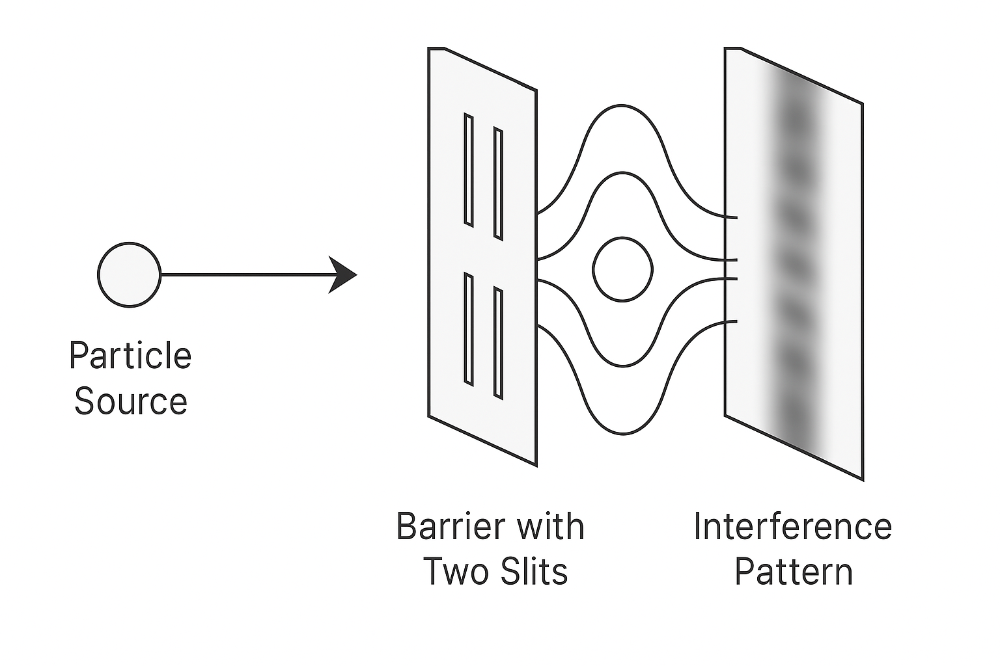

Lesson 1: Wave-Particle Duality
Light and electrons behave both as particles and waves. This was famously shown in the Double Slit Experiment, where even individual particles create an interference pattern.
In quantum computing, this wave behavior leads to the concept of superposition — a core property of qubits.
